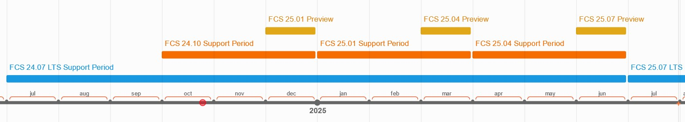

リリーススケジュール
FCSは、1月、4月、7月、10月の各四半期にリリースされます。各メジャーバージョンは、スタンダード版の場合は3ヶ月間、LTS版（長期サポート版）の場合は1年間サポートされます。また、一度リリースされたメジャーバージョンには、バグ修正のためのマイナーバージョンアップデート（例：24.07.02～）以外の更新は行われません。
スケジュール
{kind=link}

メジャーバージョン |
タイムフレーム |
サポート期間 |
|---|---|---|
24.07 LTS |
2024/07 |
1年 |
24.10 |
2024/10 |
３ヶ月 |
25.01 プレビュー |
2024/12 |
なし |
25.01 |
2025/01 |
３ヶ月 |
25.04 プレビュー |
2025/03 |
なし |
25.04 |
2025/04 |
３ヶ月 |
25.07 プレビュー |
2025/06 |
なし |
25.07 LTS |
2025/07 |
1年 |
25.10 Preview |
2025/06 |
なし |
25.10 |
2025/10 |
３ヶ月 |
26.01 プレビュー |
2025/12 |
なし |
26.01 |
2026/01 |
３ヶ月 |
26.04 Preview |
2026/03 |
なし |
26.04 |
2026/04 |
３ヶ月 |
FCSのアップグレード
スタンダード版 vs LTS版 vs プレビュー版
Standard版とLTS版の主な違いはサポート期間にあり、Standard版は3ヶ月間、LTS版は1年間サポートされます。サポート期間中、致命的なバグが修正され次第、迅速にアップデートとしてリリースされます。もし、現在サポート中のLTS版がすべての要件を満たしており、かつプロジェクトの期間がStandard版のサポート期間を超える場合は、LTS版の利用が推奨されます。Preview版は、新しいFCSバージョンの今後の機能を先取りできるとともに、開発者へフィードバックを行う機会を提供します。この版では、軽微なバグの修正が含まれ、常に変更が加えられるため、サポートは保証されません。そのため、データのバックアップを行わずにPreview版を使用することは避けてください。特定の機能が必要であり、そのリスクを十分に理解している場合にのみ、Preview版の使用を検討してください。
互換性
FCSセッションは、特に注意事項が記載されていない限り、前方互換性があります。しかし、特にメジャーバージョン間（例：24.07 と 24.10）では、後方互換性が必ずしも保証されるわけではありません。 以前のFCSバージョンで作成されたセッションは新しいバージョンのFCSで開くことができますが、一度新しいバージョンで開いたセッションは、古いバージョンでは再び開けなくなる可能性があります。そのため、新しいバージョンに移行する前に、必ずファイルのバックアップを取るようにしてください。同一メジャーバージョン内（例：24.07.01～24.07.10）では、できる限り後方互換性を維持するよう努めていますが、必ずしも保証されるものではありません。また、複数のユーザーで同じFCSセッションを利用する場合は、チーム全体で同じマイナーバージョンのFCSを使用することを推奨します。
アップグレード手順
セッションデータをエクスポートしてください。
新しくダウンロードしたFCSのバージョンを使用し、エクスポートされたデータを開いてください。